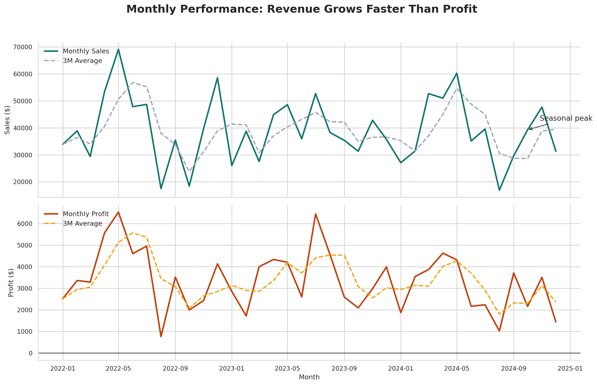
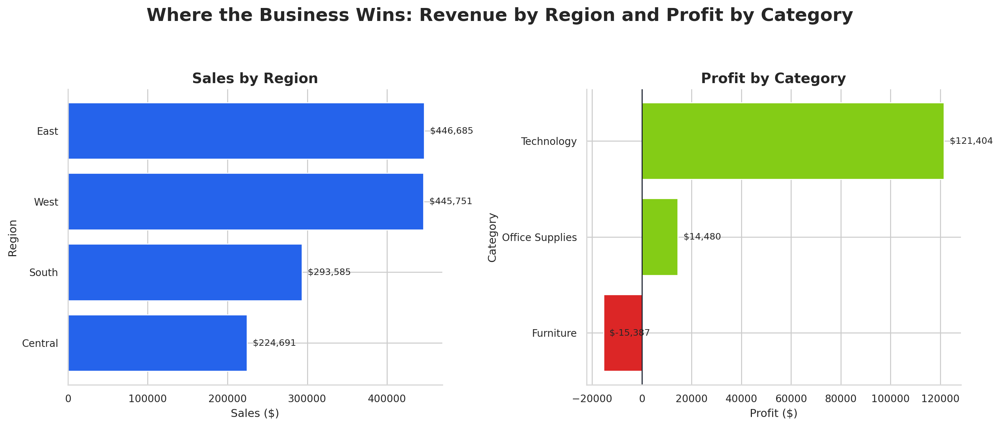
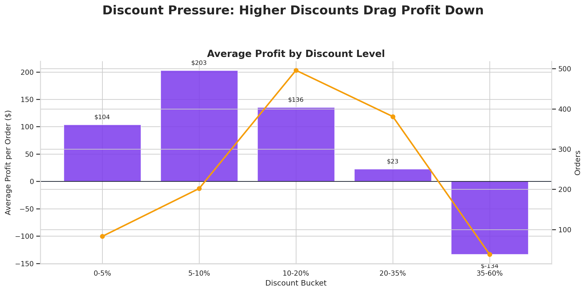
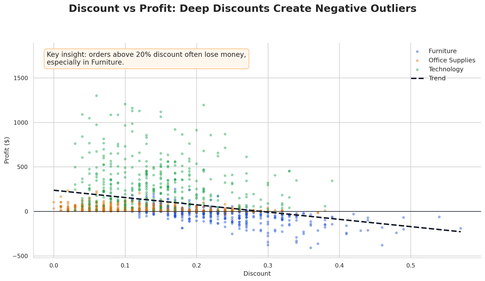

Browser-friendly preview of the generated sales story. The same dataset and insights are also exported as a PDF report in the outputs folder.
Open PDF reportThe visual narrative shows that sales are growing, but profit depends heavily on category mix and discount discipline. The key takeaway is to protect margin, especially where discounts are eating into profit.



